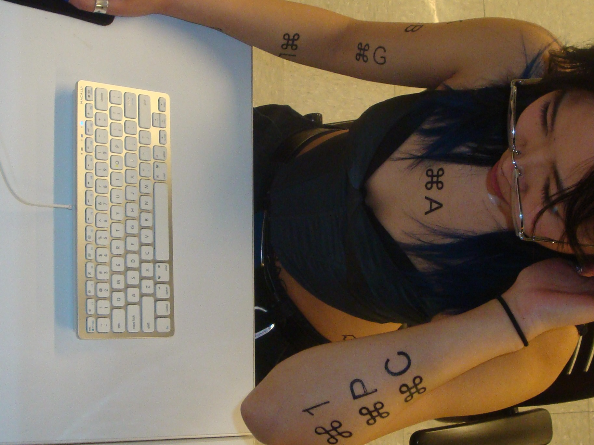
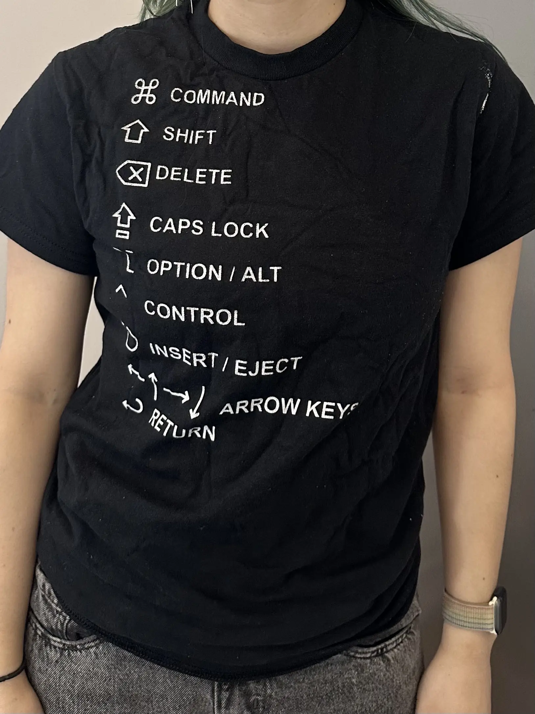
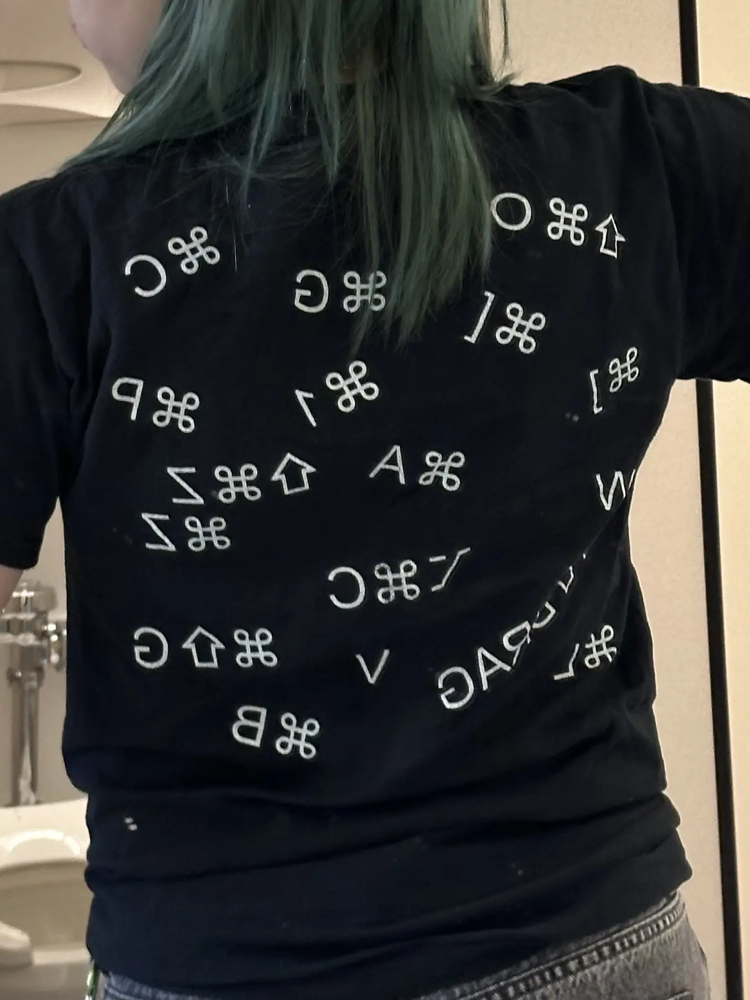

Adobe Command Tattoos
Screenprint - Apparel
2025
How funny would it be for a designer to have Adobe commands as tattoos? No longer do you need to refer to a cheatsheet, just look down at your arms!
To do this, I did used the offset printing method on screenprint.
I exposed my designs backwards, flooded the screen, rolled my balloon onto the screen to get the design onto the balloon, then rolled the balloon onto my human of choice where I wanted the tattoo placed.





Above were some trials for apparel, before settling on a final deign below that sold out in 24 hours.

